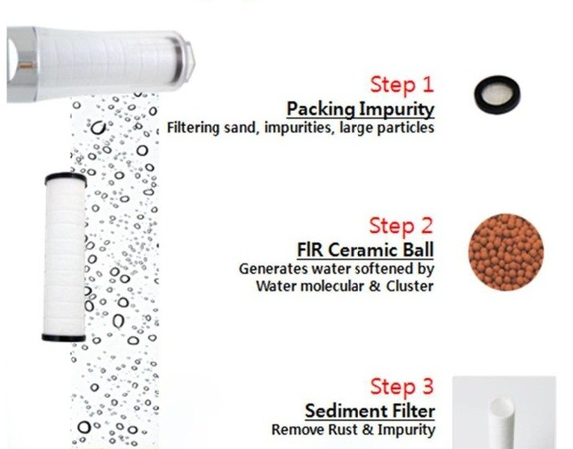

Step 2 will be for purifying
water, both from the smaller
particles left from the filter
one and from the harmful emissions
that are in the water. Step two
occurs when the water from filter
one reaches filter two and proceeds
to filter three. This step will not take long.